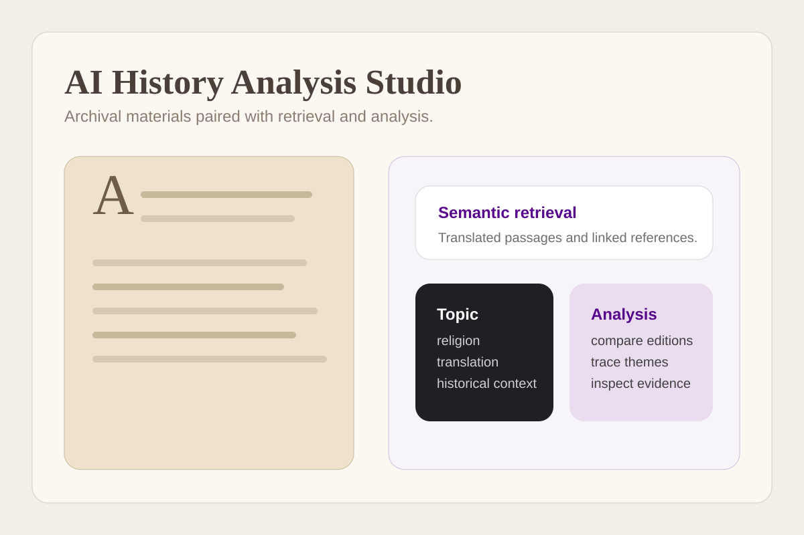
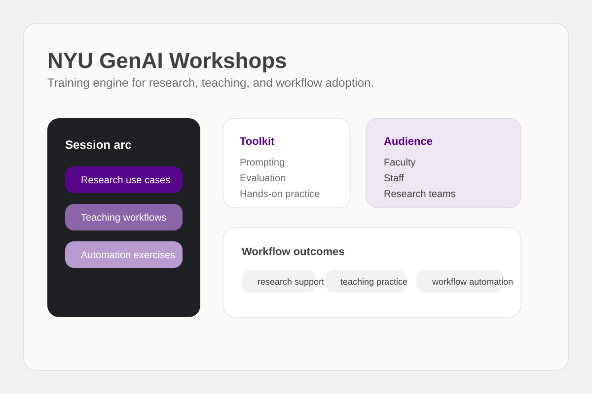
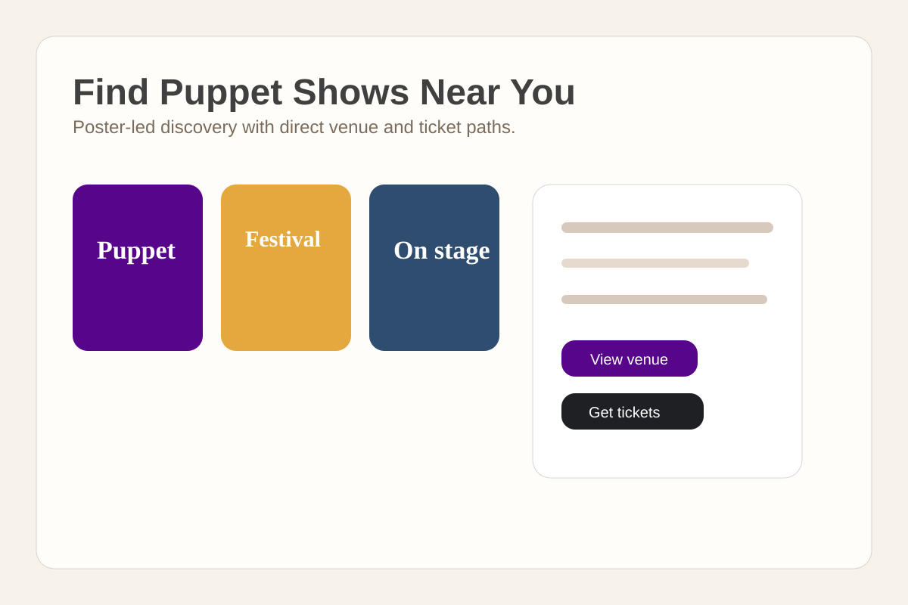
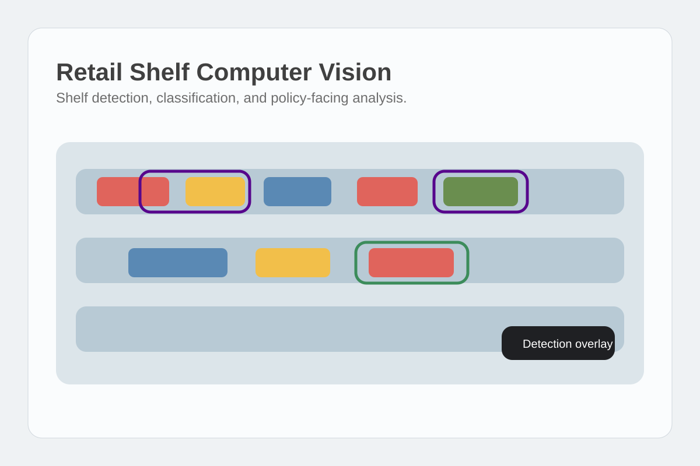
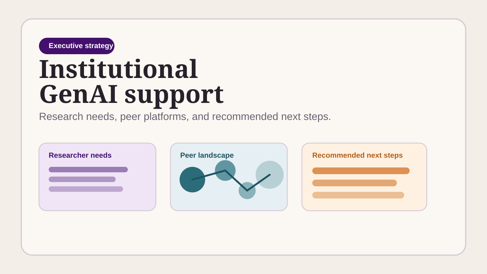

Document intelligence workspace using RAG and hybrid retrieval to explore large research corpora with transparent evidence and citations. Built for exploration without losing the underlying evidence.
Profile
Andi Shehu is a physicist and applied AI systems builder at NYU, focused on document intelligence, research infrastructure, and human-AI workflows.
Current work spans research mapping, evidence-grounded retrieval, AI training systems, digital humanities exploration, and computer vision for public health.
Work includes Research Data Scientist at Microsoft, applied AI work at DeepIntent, and Principal AI Scientist & Founder at Byteflows.
Research groups looking to work with Andi Shehu on an AI platform, workflow, or discovery system can reach out directly.
Contact
as5547@nyu.edu | LinkedIn | X

NYU and consulting projects by Andi Shehu.
Document intelligence workspace using RAG and hybrid retrieval to explore large research corpora with transparent evidence and citations. Built for exploration without losing the underlying evidence.

AI-assisted exploration of early English books using translation, semantic indexing, and retrieval to support digital humanities research. Extends the portfolio into humanities-focused corpus analysis.

Platform mapping generative AI projects, use cases, and capabilities across NYU research groups. Maps active generative AI work across NYU and makes it easier to discover, compare, and understand.
Access
Request early access
Hands-on workshops helping faculty and staff use generative AI tools for research, teaching, and workflow automation. Connects AI capability to day-to-day institutional use.
Reference URL
wp.nyu.edu/fas-edtech/flash-forc
Agentic digital marketing workflows for turning public content, events, and audience intent into updated discovery experiences. “Find Puppet Shows Near You” is one example: a public-facing site with curated performances, venue links, and ticket routing designed for outreach and audience acquisition for Jeffrey Younger.
Use case URL
nyu-rts.github.io/puppetfinder
Multimodal system detecting and classifying tobacco products from retail shelf images for policy and public health analysis. Applies computer vision to a policy-relevant public health problem.
Status
Private previewExecutive communication, institutional analysis, and applied AI strategy work.

Executive deck synthesizing researcher needs, peer platform choices, and recommended next steps for institutional AI support. Developed in an NYU context, but representative of broader higher-ed AI strategy and advisory work.
View executive deck
nyu-rts.github.io/nyu-genai-executive-deckFor research collaborations, platform design, or applied AI consulting, get in touch.